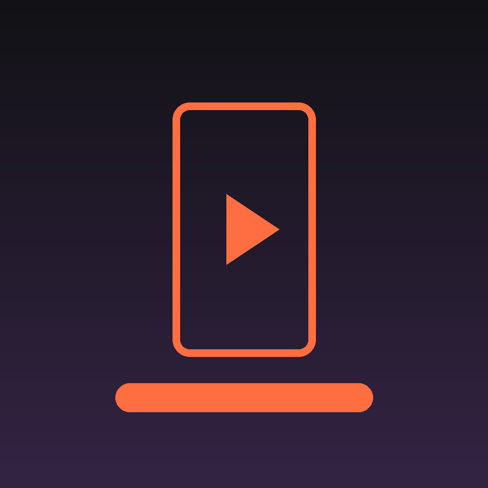

OpenShorts Self-Publisher
A self-hosted tool that turns my own long-form gaming streams into short vertical clips and publishes them to my own TikTok account.
What it does
- Transcribes my own stream recordings locally.
- Cuts them into vertical 9:16 clips with burned-in subtitles.
- Queues those clips and uploads them to my TikTok account on a schedule.
How TikTok is used
- Login Kit (
user.info.basic) — one-time authorisation of my own account. - Content Posting API (
video.upload) — sends a finished MP4 to my TikTok inbox as a draft. - Content Posting API (
video.publish) — posts the clip directly to my own account on a schedule.
Scope
There is no public sign-up and no other end users. The tool runs on my own machine, publishes only my own recordings, and never accesses data belonging to any other TikTok user. It respects the published API limits, including the cap on pending shares per 24 hours.